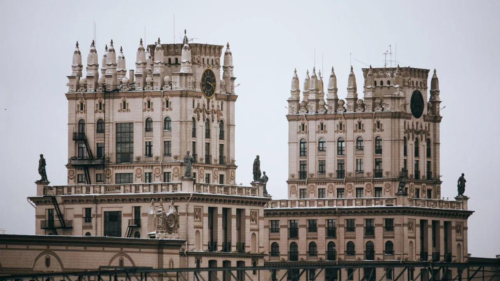
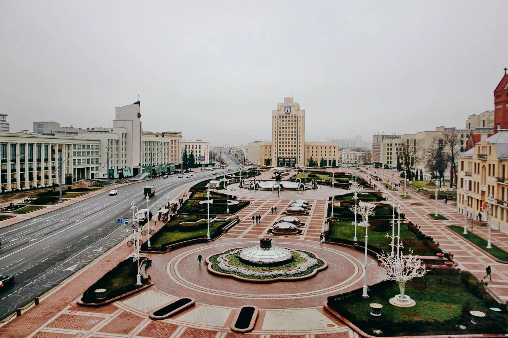
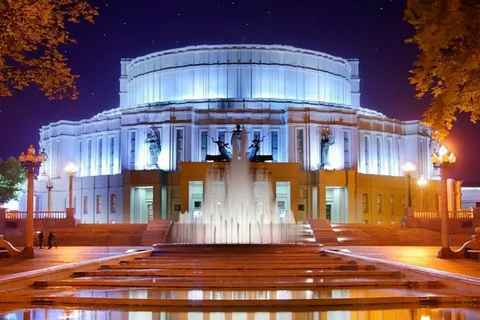

Что посмотреть в Минске: достопримечательности столицы Беларуси
Начать предлагаю с прогулки, полной отсылок к недавнему прошлому. Попробуйте любимые сладости детства в белорусском исполнении, полюбуйтесь архитектурой и посмотрите на десятки бюстов Ленина и Сталина в одной комнате. Чтобы не заблудиться, находите нужные места на карте и составляйте свой личный маршрут.
ВОРОТА МИНСКА
Первый архитектурный памятник советской эпохи встречает туристов прямо у выхода из вокзала. Две одиннадцатиэтажные башни в стиле сталинского ампира называют воротами Минска. Эти башни-близнецы примыкают к двум пятиэтажным домам. Внутри — обычные жилые квартиры. Если договоритесь с местными жителями, возможно, вам даже удастся зайти в подъезды.
ПЛОЩАДЬ НЕЗАВИСИМОСТИ
Эта площадь — центральная. Здесь расположены сразу несколько достопримечательностей, а под землёй — трёхэтажный торговый центр «Столица». В ТЦ можно купить одежду, обувь, украшения, сувениры и продукты как местных производителей (Milavitsa, Mark Formelle и других), так и заграничных брендов (Mango, Rieker и прочих). В углу площади Независимости «спрятано» самое большое здание Беларуси — Дом правительства. В здании 1770 окон и около 1000 кабинетов, сейчас здесь сосредоточено несколько органов власти. Этот архитектурный памятник эпохи конструктивизма построили в 30-е годы прошлого века. Экскаваторов и бульдозеров не было — котлованы рыли лопатами, землю вывозили на обычных телегах.
БОЛЬШОЙ ТЕАТР БЕЛАРУСИ
Если вы хотите провести вечер в Минске, прикоснувшись к театральной культуре страны, — сходите на балет, оперу или спектакль в Большой театр Беларуси. Это крупнейший театр страны, билеты в который порой довольно сложно достать. Здание Большого театра — образец советского довоенного конструктивизма. Этому стилю свойственны строгость, монолитность, геометричные формы. Театр возведён на Троицкой горе — самой высокой точке города.
Численность организованных иностранных туристов и экскурсантов, посетивших Республику Беларусь в 2022 году
| Страна | Количество туристов |
|---|---|
| Российская Федерация | 136 008 |
| Латвия | 2 164 |
| Польша | 737 |
| Германия | 504 |
| Казахстан | 278 |
| Украина | 247 |
| Китай | 305 |
| Эстония | 224 |
| Турция | 181 |
| США | 91 |